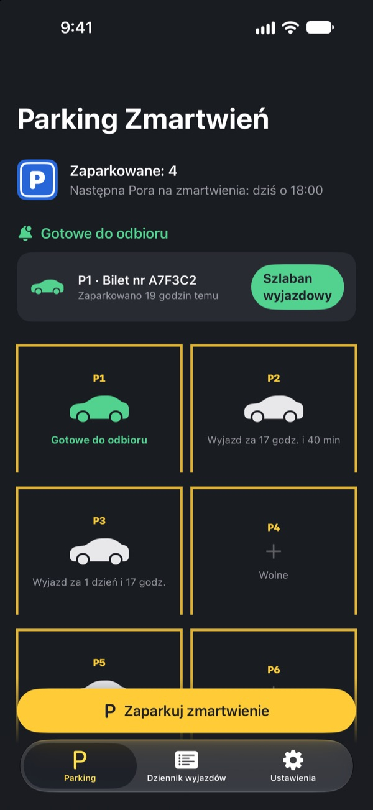
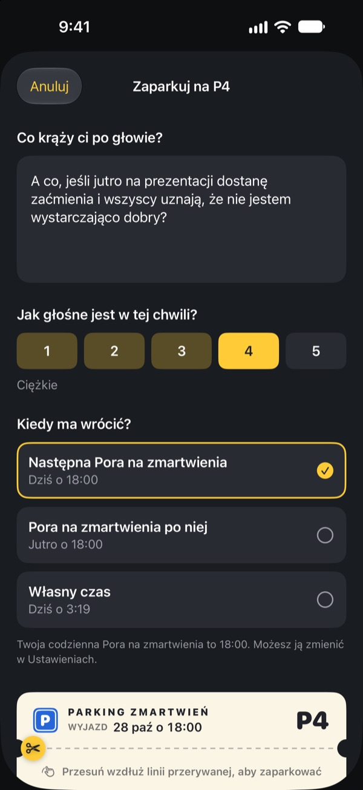
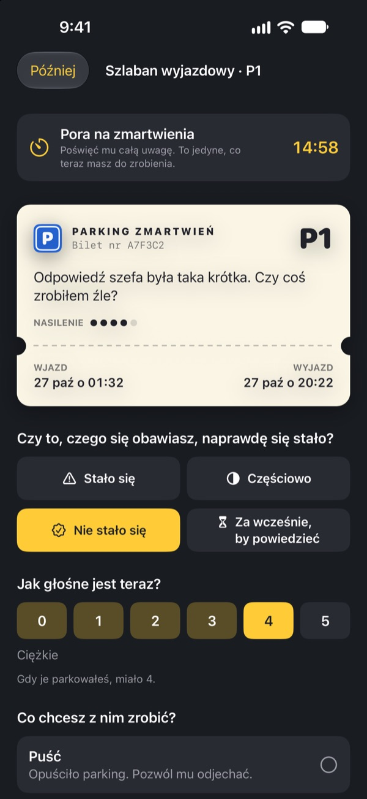
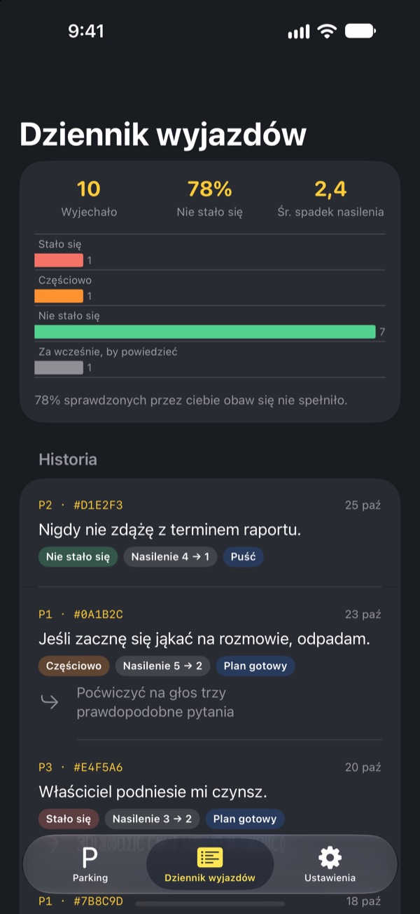

Zaparkuj zmartwienie.
Odbierz je później.
Zapisz to, co krąży ci po głowie przed snem, i zostaw na bilecie parkingowym. Oddamy ci je w Porze na zmartwienia. Do tego czasu nie musisz go nosić ze sobą.
Wszystkie funkcje są darmowe. Bez reklam i bez konta.

Zaparkuj jedno zmartwienie
Zostaw przykład albo wpisz to, co masz teraz w głowie. Zaparkowane się rozmywa, a w Porze na zmartwienia wyciągasz je z powrotem.
Światło zgaszone, a głowa wciąż pracuje?
Ledwo przyłożysz głowę do poduszki, a już się zaczyna: zdanie powiedziane w ciągu dnia, jutrzejsze spotkanie, wiadomość, na którą nikt nie odpisał. Im bardziej starasz się o tym nie myśleć, tym głośniej to brzmi. Parking Zmartwień nie każe ci odpychać zmartwienia. Zapisujesz je, dajesz mu miejsce i rezerwujesz czas, żeby się nim zająć.
Zapisane wychodzi z głowy
Zapisz je dokładnie tak, jak brzmi w twojej głowie, i oceń, jak głośne jest teraz, od 1 do 5. Oderwij bilet, a zmartwienie zostanie na parkingu, rozmyte.
Jeśli znów wjedzie ci do głowy, powiedz mu: masz już miejsce. Twój czas przyjdzie, ale nie teraz.

15 minut w Porze na zmartwienia
Codziennie w Porze na zmartwienia dostajesz przypomnienie. Przy szlabanie wyjazdowym czytasz zmartwienie jeszcze raz, sprawdzasz, czy naprawdę się wydarzyło i jak głośne jest teraz.
Potem je puszczasz, zamieniasz w jeden mały kolejny krok albo parkujesz do następnej Pory na zmartwienia.

Zobacz, jak często zmartwienia się sprawdzały
Im więcej zmartwień wyjechało, tym wyraźniej dziennik wyjazdów pokazuje, ile z nich naprawdę się wydarzyło i o ile spadła ich siła.
Zmartwienie zwykle maluje przyszłość czarniej, niż się okazuje. Im więcej zapisujesz, tym mniej wierzysz następnemu.

Start w trzech krokach
- 1
Wybierz Porę na zmartwienia
Przy pierwszym uruchomieniu wybierasz, kiedy każdego dnia zajmiesz się zmartwieniami. Zmienisz to później w Ustawieniach.
- 2
Zaparkuj prawdziwe zmartwienie
Od razu zaparkuj coś, co cię gryzie, i poczuj, jak zmienia się jego siła przed i po.
- 3
Zezwól na przypomnienia o odbiorze
W Porze na zmartwienia przyjdzie przypomnienie tylko z numerem miejsca.
Dlaczego to działa
- Martw się tylko o stałej porze
- Osoby, które przeniosły zamartwianie na krótki codzienny czas, martwiły się mniej i zgłaszały mniej lęku i problemów ze snem. (Borkovec i in., 1983; McGowan i Behar, 2013)
- Zapisz, żeby odpuścić
- Konkretny plan sprawiał, że niedokończone sprawy rzadziej wdzierały się w myśli, a pięć minut pisania przed snem pomagało szybciej zasnąć. (Masicampo i Baumeister, 2011; Scullin i in., 2018)
- Sprawdź, co naprawdę się stało
- Gdy osoby z przewlekłym zamartwianiem się zapisywały swoje zmartwienia, 91% z nich się nie spełniło. (LaFreniere i Newman, 2020)
Parking Zmartwień opiera się na odraczaniu zmartwień, technice terapii poznawczo-behawioralnej (CBT) badanej od dziesięcioleci.
Wszystko za darmo
Za darmo
- Nielimitowane miejsca parkingowe
- Codzienne przypomnienia w Porze na zmartwienia i własna godzina wyjazdu
- Szlaban wyjazdowy i dziennik wyjazdów
- Statystyki wyjazdów: ile się spełniło i o ile spadła siła
Napiwek, jeśli chcesz
- Jeśli aplikacja ci pomaga, możesz dać twórcy mały napiwek
- Mały, średni lub duży, jak wolisz
Napiwek niczego nie odblokowuje. Bez niego wszystko działa tak samo.
Bez reklam, konta, serwerów i narzędzi analitycznych. Wszystko, co piszesz, zostaje na twoim iPhonie.
Częste pytania
Jak zmienić Porę na zmartwienia?
W karcie Ustawienia, w pozycji Pora na zmartwienia. Nowa godzina dotyczy zmartwień parkowanych od tej chwili. Te już zaparkowane zachowują pierwotną godzinę wyjazdu.
Nie dostaję przypomnień o odbiorze.
Sprawdź Powiadomienia w karcie Ustawienia. Jeśli są wyłączone, stuknij Otwórz Ustawienia iOS i je włącz. Przy włączonym trybie skupienia lub Nie przeszkadzać przypomnienia mogą przychodzić bez dźwięku. Nawet bez przypomnienia zmartwienia, na które przyszła pora, są na parkingu oznaczone jako gotowe do odbioru.
Czy moje zmartwienie widać w powiadomieniu?
Nie. Powiadomienia pokazują tylko numer miejsca, na przykład „P3 jest gotowe do odbioru”. Samo zmartwienie zobaczysz dopiero po otwarciu aplikacji, przy szlabanie wyjazdowym.
Czy mogę zajrzeć do zmartwienia wcześniej?
Stuknij jego samochód na parkingu i wybierz Wyślij je teraz do szlabanu wyjazdowego. Odraczanie działa jednak najlepiej, gdy poczekasz. Większość zmartwień w Porze na zmartwienia wydaje się już mniejsza.
Czy przeniosę zapiski na nowego iPhone’a?
Wszystko jest zapisane tylko na twoim iPhonie, bez konta i synchronizacji. Jeśli odtworzysz nowego iPhone’a z kopii zapasowej iCloud lub komputera albo użyjesz funkcji Szybki start, dane przejdą razem z innymi aplikacjami.
Jak usunąć zapiski?
W karcie Dziennik wyjazdów przesuń wpis w lewo, aby go usunąć. Usunięcie aplikacji kasuje wszystko.
Czy to terapia?
Parking Zmartwień to narzędzie samopomocy oparte na odraczaniu zmartwień z CBT. Nie jest wyrobem medycznym i nie zastępuje profesjonalnej diagnozy ani leczenia.
A jeśli jest mi naprawdę ciężko?
Jeśli zmartwienia przejmują twoje dni albo myślisz o zrobieniu sobie krzywdy, nie zostawaj z tym sam. W Polsce zadzwoń pod 116 123 (telefon wsparcia emocjonalnego dla dorosłych) lub 112 w nagłej sytuacji.
Pytania lub pomysły? Napisz na leeo@kakao.com.